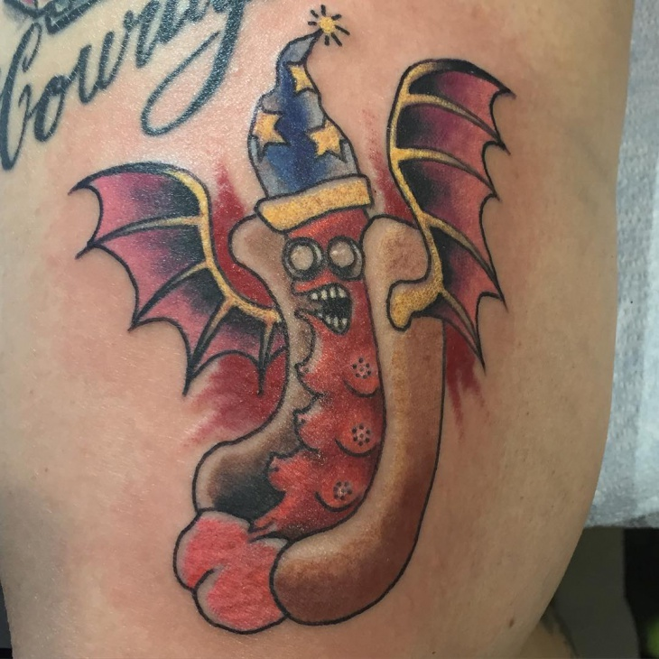
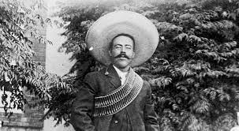

Panchos. Las fuerzas que nos dominan
Los panchos, también conocidos como hot dogs (caliente perros) en paises
de habla inglesa, es la denominación que adquiere una especie de misterioso
origen cuyas apariciones a lo largo de la historia han promovido, en iguales
proporciones, terror y fascinación.
Con el aporte de múltiples investigaciones científicas y esfuerzos de diversas
áreas del conocimiento humano, intentaremos develar los secretos del Pancho

Es posible que nunca conozcamos las reales intenciones
o el alcance de las posiblidades del Pancho como especie.
Sin embargo, todo nos hace suponer que estos seres no sólo están
entre nosotros, y me atrevo a decir que desde tiempos ancestrales,
sino que han demostrado interés en nuestra especie y la han empujado
hacia algunos de sus más significativos avances.
Giorgio Moroder, en su libro "Pancho, bastión de la esperanza o fin de la historia"
UNLAM Editorial (2009)
.jpg)
Giorgio Moroder
Avistamientos de Panchos
Panchos entre nosotros
-
 Evidencia de panchos (Circa 1920)
Evidencia de panchos (Circa 1920) - Escenas de adoración al Pancho, Egipto
- Escultura que representa al dios maya Salchipapas

Escenas de pánico ante la aparición de un pancho en Atlanta, EEUU (2018)
Panchos en la cultura popular
Ejemplos del impacto cultural
-  Tatuajes con simbolismos panchos
- Panchos en publicidades
- Pancho Dotto
-  Pancho Villa
- Macri Pancho